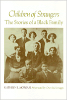

Narrates the attempts of five generations of black women to cope with the fears and anxieties of life in a white society
Narrates the attempts of five generations of black women to cope with the fears and anxieties of life in a white society


 Narrates the attempts of five generations of black women to cope with the fears and anxieties of life in a white society
Narrates the attempts of five generations of black women to cope with the fears and anxieties of life in a white society

|  |
Children of StrangersThe Stories of a Black FamilyKathryn L. Morgan, afterword by Otey M. Scruggspaper EAN: 978-0-87722-240-8 (ISBN: 0-87722-240-1) |
"...a conceptually sensitive melding of history and anthropology, and a fine example of what folklore—done well—can look like."
—Pennsylvania Magazine of History and Biography
Collecting her family's own stories and photographs, Kathryn Morgan has brought to life the attempts of five generations of black women to cope with the fears, angers, and anxieties of life in a hostile white society. Compiled in three parts—the Caddy Legends, childhood reminiscences, and Maggie's memories of "color" and "race"—these tales are written in the southern, black oral tradition, and were told and re-told as emotional buffers against an inherently inhuman situation. According to the author, "family folklore was the antidote used by our parents, grandparents, and great grandparents to help us counteract the poison of self-hate engendered by racism."
The two principal "warriors" in these stories are Caddy, the author's great-grandmother, slave-born fountainhead of the family's oral tradition, and Maggie, the author's mother, who could often "pass" because her skin was so light. Through their recollections we receive an intense portrayal of everyday black life in a variety of settings and periods as well as characters and personalities. From Caddy's home in Lynchburg, Virginia, to the successive generations that settled in North Philadelphia, the psychological effects of emotional and physical segregation are recounted in many telling and ironic episodes.
Stories such as "How Caddy Found Her Mother," "The Whipping and the Promise," and "God and Lice" are profound in the truths they reveal. Attempting to make the family's past applicable to the present, the stories invariably had the function of bolstering the individual's self-esteem. The fifteen photographs included in the book help introduce the reader to the Morgan family.
Too often traditional scholarship has presented black family life only in statistical aggregates or as a social problem. Children of Strangers is a new kind of evidence about black urban and ethnic life; it provides striking insights into the successful strategies used by black families to raise their children in a white-dominated world.
The late Kathryn L. Morgan taught History at Swarthmore College.
© 2015 Temple University. All Rights Reserved. This page: http://www.temple.edu/tempress/titles/219_reg.html.